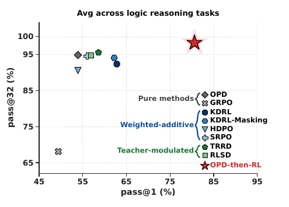
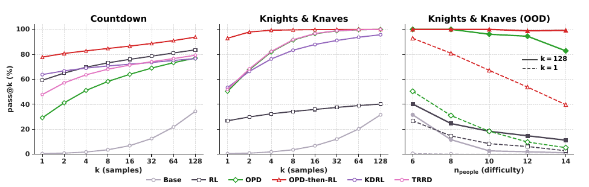

Sequential Beats Joint: OPD-then-RL Outperforms Every Fused OPD+RLVR Objective
TL;DR
- Boyan Li, Bingsen Chen, Chenghao Yang, Ping Nie, Chen Zhao and Xi Ye (Alberta/Amii, NYU + NYU Shanghai, Chicago, Waterloo) put every published way of combining on-policy distillation with RLVR into one token-level policy-gradient template, and show they all differ only in how they mix two advantage terms inside a single update. Then they show the mixing is the problem: just running OPD for 60 steps, then plain GRPO beats all of them.
- On three ReasoningGym logic tasks, OPD-then-RL reaches 80.6 average pass@1, ahead of the best joint method by 11.7–26.7 points and ahead of pure OPD (53.9) and pure GRPO (49.4). It also passes the teacher: Qwen3-8B scores 59.9, while every joint method plateaus underneath it.
- The mechanism is clean and measurable. OPD raises pass@\(k\) at large \(k\) (it expands what the student can reach at all); RL then concentrates probability mass inside that expanded support. Fusing them makes the RL term fight OPD's parameter updates — sign-conflict rate on OPD's largest-magnitude parameters is 15.0% for KDRL versus 3.4% for OPD-then-RL.
Why this matters
On-policy distillation is now a standard stage in open post-training recipes, and the obvious next move — "we have a dense teacher signal and a verifiable reward, so use both at once" — has produced a small literature of fused objectives: KDRL, KDRL-mask, SRPO, HDPO, RLSD, TRRD. Each reports gains over OPD or RL alone, so the field has been quietly accumulating the assumption that fusion is the right shape for the problem.
This paper checks the baseline that nobody ran properly, and the baseline wins. That is worth a lot of compute: the two-stage recipe has no mixing coefficient \(\beta\) to tune, needs no teacher forward passes after the switch, and (the paper notes) weighted-additive methods are highly sensitive to \(\beta\), requiring task-specific ablations to be competitive at all. If you are budgeting a post-training run today, the practical read is that OPD is a cold-start stage, not a co-objective — and a better cold start than SFT, by 4.9 pass@1 before RL even begins.
The core idea
Both objectives reduce to policy-gradient ascent with a method-specific per-token advantage. GRPO assigns every token in a rollout the group-normalized outcome reward
where \(R^{(i)}\) is the verifiable reward of the \(i\)-th of \(G\) rollouts sampled for a prompt. OPD instead minimizes reverse KL to the teacher on the student's own rollouts, which decomposes into a per-token advantage
with \(\pi_T\) the teacher, \(\pi_\theta\) the student, and \(h_t^{(i)} = (x, y_{<t}^{(i)})\) the history before token \(t\). Everything then fits one template:
where \(A_t^{\mathrm{alg}}\) is the only thing that varies across methods. The published combinations split into two families: weighted-additive, \(A_t^{\mathrm{add},(i)} = w_R \hat{A}^{(i)} + w_T d_t^{(i)}\), where the teacher term can flip the sign of the reward advantage; and teacher-modulated, \(A_t^{\mathrm{mod},(i)} = m(d_t^{(i)}) \cdot \hat{A}^{(i)}\) with \(m > 0\), where the teacher only rescales magnitude and the verifier keeps the sign. The paper's alternative is to stop mixing and switch:
with \(S\) the switching point (default \(S = 60\) of 150 total steps).

Figure 1 from the paper: each point is one post-training algorithm. The joint methods cluster tightly around pure OPD and pure GRPO; the sequential recipe sits alone on both axes.
How it works
OPD-then-RL (student π_θ, teacher π_T, verifier R, switch step S)
1. for step = 1 .. S: # Stage 1 — expand coverage
2. x ~ D; sample rollouts y ~ π_θ(·|x)
3. query teacher log-probs on the STUDENT's tokens
4. d_t = log π_T(y_t|h_t) - log π_θ(y_t|h_t)
5. policy-gradient step with advantage A_t = d_t
6. track OPD validation pass@1
7.
8. # switch when OPD validation score saturates — that score
9. # is what propagates into the RL stage
10.
11. for step = S+1 .. T: # Stage 2 — sharpen inside it
12. x ~ D; sample group of G rollouts y ~ π_θ_old(·|x)
13. R_i = verify(x, y_i)
14. Â_i = (R_i - mean(R)) / std(R) # group-normalized
15. PPO-clipped step with advantage A_t = Â_i
16. teacher is never queried again
Two details make this a recipe rather than a trick. First, when to switch: the authors compare switching at steps 20, 60 and 100. On K&K and Zebra, where OPD's validation score is still climbing at step 100, later switches win outright. On Countdown, where OPD saturates by step 20, all three switch points converge to the same post-RL accuracy. The rule that falls out is not "switch at step 60" but "switch when the OPD validation score stops improving" — that score largely determines the final number.
Second, hard switching beats soft. KDRL-Annealing linearly decays \(\beta\) from 0.2 to 0.002, which is the continuous version of the same schedule, and it still loses to the hard switch (68.9 vs 80.6 logic pass@1). Any residual teacher term keeps pulling the student back.
Results
Teacher is Qwen3-8B in non-thinking mode; student is Qwen3-1.7B-Base (Qwen3-0.6B-Base in the appendix shows the same trends). Logic tasks are Knights & Knaves, Zebra Puzzles and Countdown from ReasoningGym; math is DeepMath-103K for training, evaluated on MATH500 / AMC23 / AIME24 / AIME25. All methods get the same total step budget, and pass@1 is avg@32.
| Method (logic avg) | pass@1 | pass@32 |
|---|---|---|
| Student (Qwen3-1.7B-Base) | 1.9 | 33.0 |
| Teacher (Qwen3-8B) | 59.9 | 96.2 |
| GRPO | 49.4 | 68.1 |
| OPD | 53.9 | 94.9 |
| KDRL (best weighted-additive) | 62.8 | 92.4 |
| TRRD (best teacher-modulated) | 58.6 | 95.6 |
| KDRL-Annealing | 68.9 | 95.4 |
| OPD-then-RL | 80.6 | 98.3 |
Per-task, the K&K gap is the widest: 92.6 pass@1 against 86.3 for annealing, 50.5 for OPD and 28.1 for GRPO. On math the field compresses — 31.8 average pass@1 for OPD-then-RL versus 31.6 for SRPO and 31.0 for pure OPD — and the authors are honest about it: paired problem-level bootstrap tests find the lead significant against six of nine competitors and a statistical tie with the three strongest. The domain difference is itself informative. Where the teacher is heavily post-trained (math), its behavior is already a good proxy for the task objective and the verifiable reward has little left to add; where the teacher has limited prior exposure (logic), the two signals genuinely carry different information.

Figure 2 from the paper: OPD lifts the whole pass@k curve (largest gain at large k); OPD-then-RL keeps that ceiling and adds pass@1. On out-of-distribution K&K (right), pass@128 stays high as difficulty grows even while pass@1 falls.
Three analyses converge on the same story. Pass@\(k\): OPD widens the pass@128 − pass@1 gap by enlarging the solvable set; RL narrows it by moving mass toward pass@1. Learning dynamics: OPD and all joint methods plateau below the teacher's 56.6 K&K pass@1, while the scheduling methods cross it — OPD-then-RL averages 20+ points above the teacher on logic. Decomposing \(D_{\mathrm{KL}}(p_S \| p_T) = H(p_S, p_T) - H(p_S)\) shows the RL stage does not leave the teacher's support: cross-entropy keeps falling while entropy falls faster, and the student's top-\(K\) overlap with the teacher shrinks while its probability mass on the retained tokens grows. Parameter updates: the sign-conflict rate against OPD's updates, on OPD's top-100% updated parameters, is 21.0% for pure RL, 15.0% for KDRL, 6.6% for TRRD and 3.4% for OPD-then-RL — and OPD-then-RL's conflicts sit almost entirely in the low-magnitude tail. The causal check is the nicest experiment in the paper: surgically replacing a fraction of KDRL's sign-conflicting parameters with OPD's values monotonically improves pass@\(k\) while degrading pass@1, and a random-parameter control does not reproduce the trade-off.
How it connects
- It reframes a running argument in this tracker. OPSA argued most of OPD's gain is self-suppression of low-probability tokens rather than teacher knowledge; this paper argues OPD's distinctive contribution is coverage expansion (pass@\(k\) at large \(k\)). Both are consistent with a deflationary reading of "distillation," and both point at the same practical conclusion: stop treating the teacher term as a permanent objective.
- Same shape as TailSFT, different stage. TailSFT found that optimizing a cold start for coverage (pass@K) rather than pass@1 produced checkpoints that won every matched GRPO comparison afterwards. This paper finds OPD is a better coverage-oriented cold start than SFT (30.3 vs 25.4 pass@1 before RL; +7.2 pass@32 after). Two independent routes to "the cold start's job is coverage, RL's job is sharpening."
- A concrete instance of gradient interference. SFT Conflicts, RL Coexists measured dense, overlapping SFT updates interfering across tasks while sparse RL updates stay near-orthogonal. The sign-conflict analysis here is the within-objective version of that measurement, and it identifies which parameters matter — the subspace carrying OPD's pass@\(k\) gains.
- Complements the teacher-reliability thread. TGOPD gates OPD per prompt by auditing the teacher, and MOPD / no-free-lunch catalogues where teachers transfer badly. Those fix which prompts to distill on; this fixes when to stop distilling at all. They compose.
- Read alongside today's other RL addition. Never Give Up shows RL disproportionately improves problems the model already solves. If RL mostly sharpens within existing support, then whatever expands that support first — OPD here, adaptive sampling there — is where the real headroom is.
Critical take
The scale is small and the paper knows it: a 1.7B student and an 8B teacher, 150 training steps, three logic tasks plus DeepMath. The mechanism story (coverage then sharpening) is plausible and well-instrumented, but nothing here tells you whether a 60-step switch point survives at 10× the model size or 100× the steps — and the switching criterion, "when OPD validation saturates," is exactly the quantity that becomes expensive and noisy to measure at frontier scale.
The math results are close to a wash, and the honest framing in the paper is that most methods tie there. That weakens the headline: the 26.7-point margins come from logic tasks where the teacher is weak, which is arguably the regime where the sequential recipe should win most and where practitioners are least likely to be operating. A frontier post-training team distilling from a heavily post-trained teacher is in the math regime, where this paper's own numbers say the choice barely matters.
The strongest contribution is the one least likely to be cited: the unified token-level table showing that six published "combination methods" are one equation with different coefficient choices. That is a genuine piece of field hygiene, and it makes the null result legible — these methods were never exploring a rich design space, they were tuning a mixing weight that should have been a schedule.
If you remember three things
- OPD and RLVR are stages, not co-objectives. Every published fusion is the same token-level update with a different mixing rule, and running the two signals sequentially beats all of them — by 11.7–26.7 pass@1 on logic, with no mixing coefficient to tune.
- The division of labor is coverage then sharpening. OPD lifts pass@\(k\) at large \(k\); RL redistributes mass toward pass@1 without leaving the teacher's support. Fusion makes them fight, measurably, in the parameter subspace carrying OPD's coverage gains.
- Switch on the OPD validation curve, and prefer OPD to SFT as the cold start. The OPD score at the switch point is what propagates into RL; switching before saturation caps final accuracy. OPD cold start beats SFT cold start by 4.9 pass@1 before RL and widens to +7.2 pass@32 after.